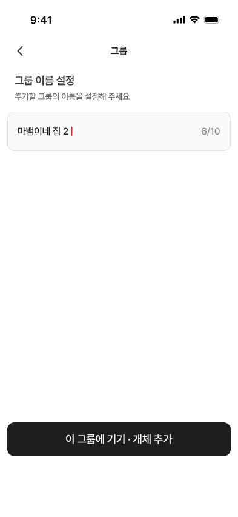
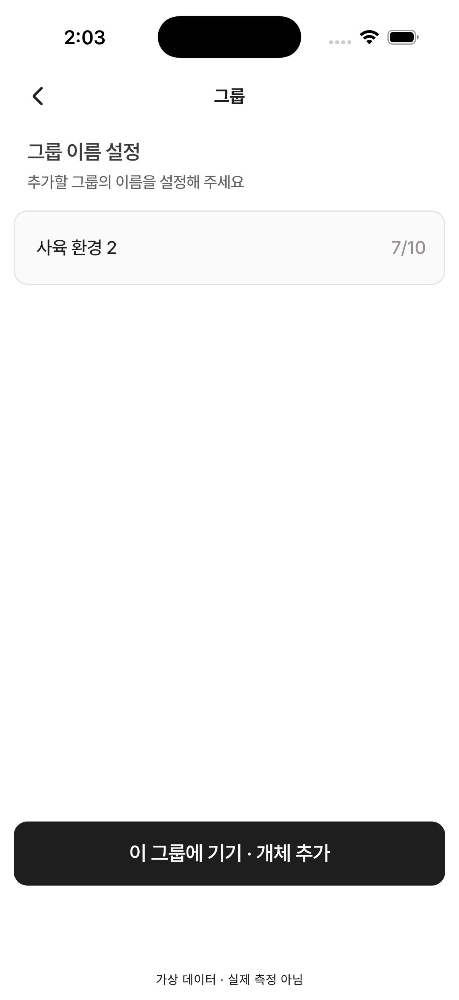

16 · 그룹 이름 설정
15번 승인 완료 · 기본 상태 수치 검수 일치, 사용자 확인 대기
간격·폰트 크기/굵기/줄높이·색상·뒤로 아이콘·버튼 위치와 터치 영역을 같은393pt 크기로 확인했습니다. 기본 이름/글자 수는 QA 데이터 차이입니다.
이번에는 키보드가 닫힌 기본 화면을 확인합니다. 중복 이름 오류와 키보드 상태는 별도 검수입니다.
Figma · 393×852
16 · 시뮬레이터 · 402×874
측정값과 검수 범위 · 393pt 제품 위젯